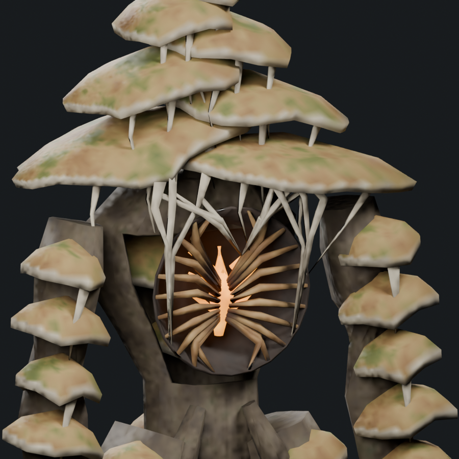
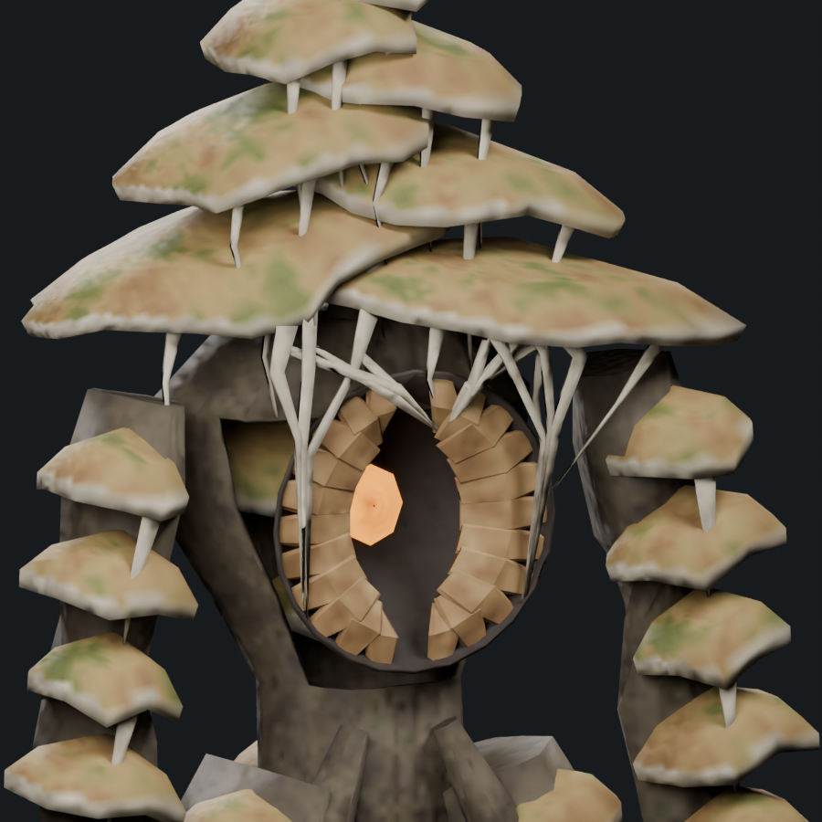
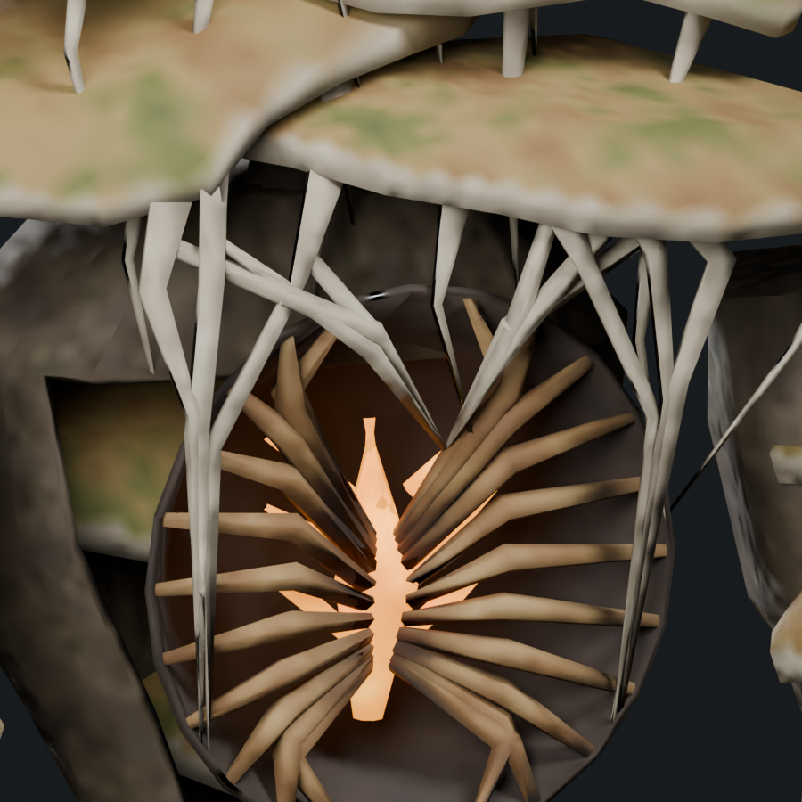
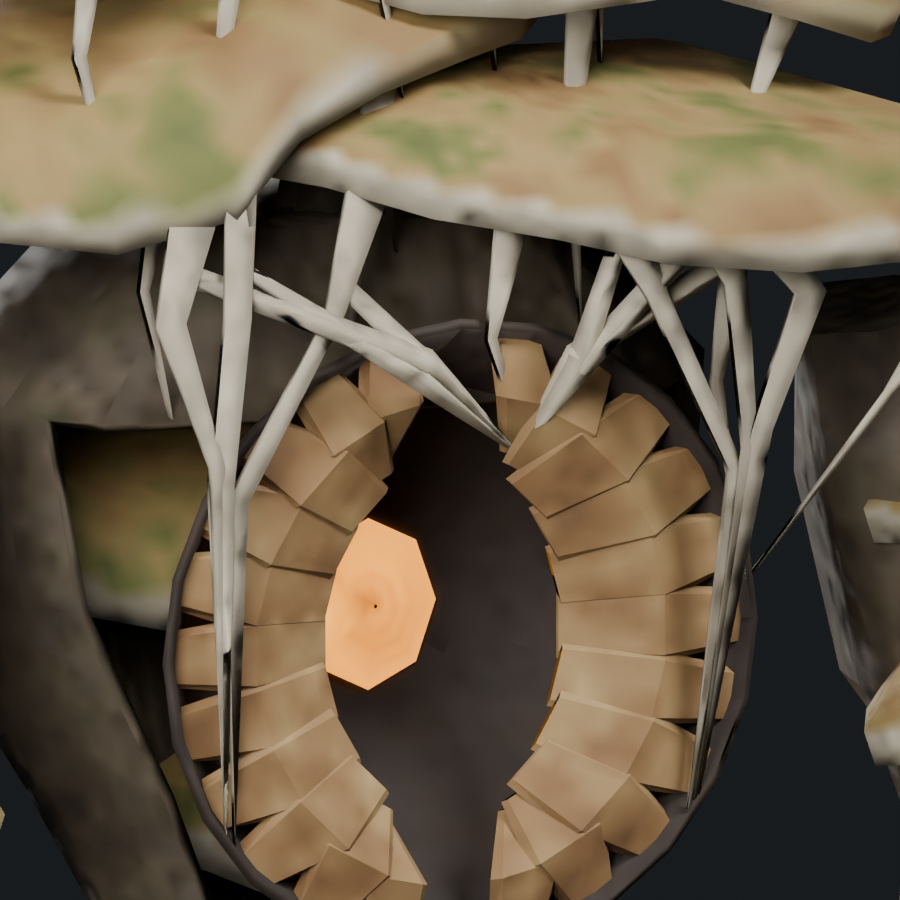
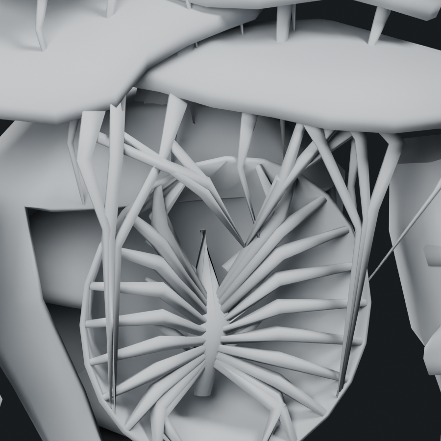
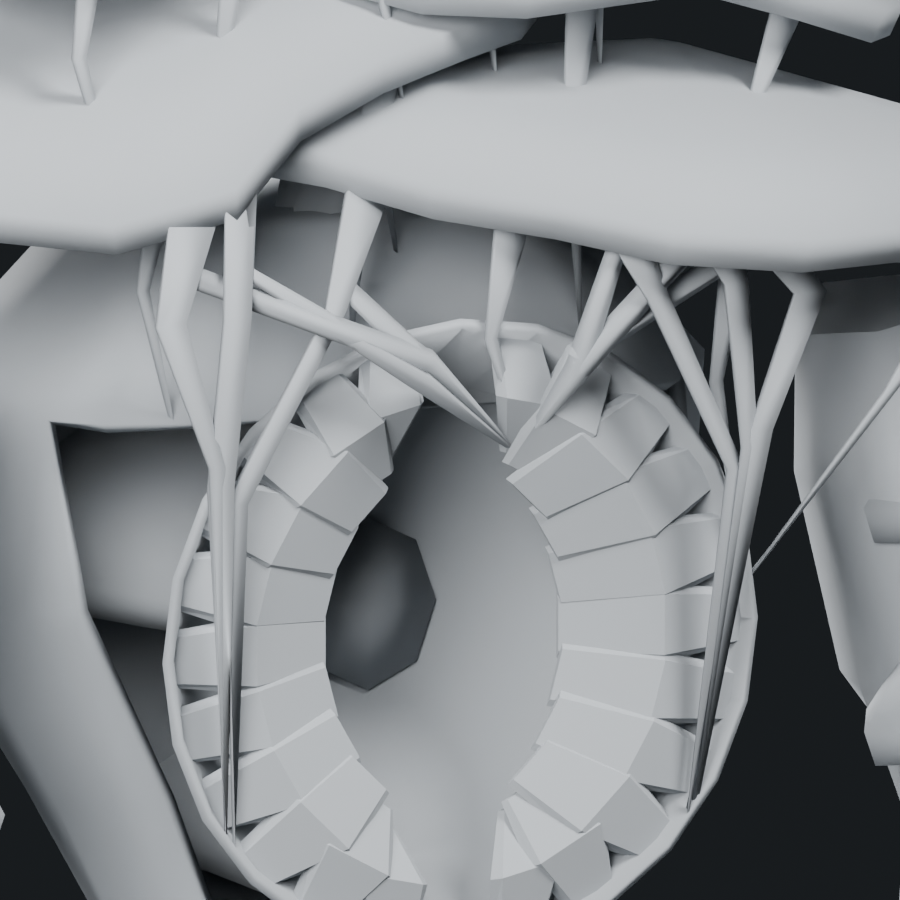

First Bloom: wall-rooted chest frills
The chest now contains 22 broad, thin fungal shelves projecting from the cavity walls. Their inner leading edges remain free, with a clear central gap. The long central rod is replaced by a small recessed amber growth, and six straight glowing struts are removed. All 98 structural attachment ends across 60 groups are seated into their supports. The 22 free frill edges are explicitly marked and have an anchored wall root.
Every vertex across each endpoint—not only its center—is inside its designated support. Bone weights follow the actual support triangle. Five inherited attack samples have a maximum measured separation of 0.52 mm, below the 1 mm review tolerance.
Still 9,188 triangles / 1.48× Troll, one mesh, one material and four 512px atlas maps.

Before · floating frame ends
After · explicit support contactsChest shelf close-ups

Before · textured
After · textured
Before · clay
After · clayFull concept · Editable Blender study · Skinned GLB · Inherited attack pose · Saved contact audit · Frill revision record
These are intersecting attachment surfaces, not topologically welded meshes. The rest contact check and five inherited pose samples do not establish all-animation or native runtime acceptance. This candidate remains uninstalled.